Generated-image × code motion effects for 9:16 short videos. Render any effect: examples/effect-library/one.sh <id>
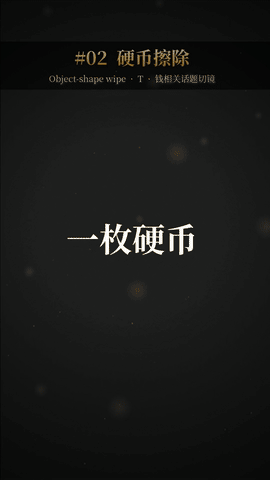
t_coinWipeObject-shape wipe / 硬币擦除转场 Transition · 钱相关话题切镜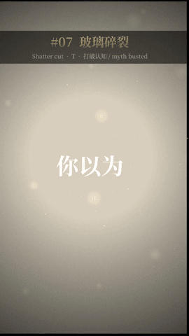
t_shatterShatter cut / 玻璃碎裂转场 Transition · 打破认知 / myth busted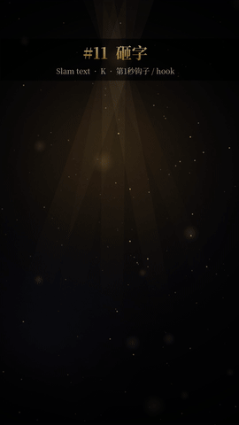
k_slamSlam text / 砸字动态字 Kinetic text · 第1秒钩子 / hook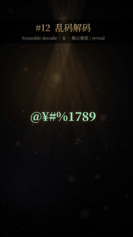
k_scrambleScramble decode / 乱码解码动态字 Kinetic text · 揭示秘密 / reveal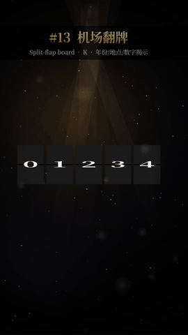
k_splitFlapSplit-flap board / 机场翻牌动态字 Kinetic text · 年份/地点/数字揭示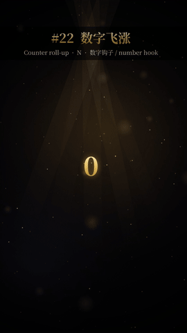
n_counterCounter roll-up / 数字飞涨数字 Number · 数字钩子 / number hook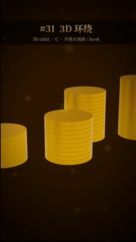
c_orbit3D orbit / 3D 环绕镜头 Camera · 开场大场面 / hook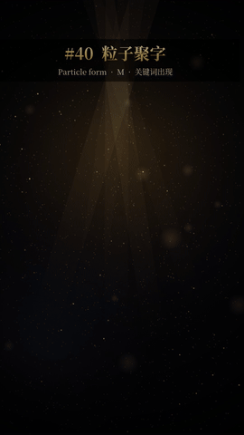
m_particleTextParticle form / 粒子聚字变形/物理 Morph · 关键词出现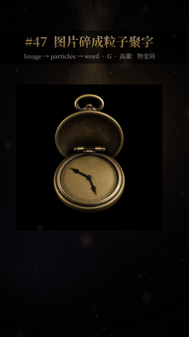
g_img2particlesImage → particles → word / 图片碎成粒子聚字生图×代码 Image-gen · 高潮：物变词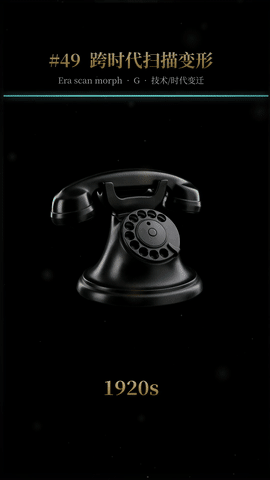
g_eraMorphEra scan morph / 跨时代扫描变形生图×代码 Image-gen · 技术/时代变迁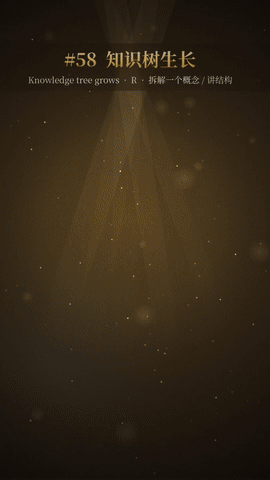
r_treeGrowKnowledge tree grows / 知识树生长树状节点 Tree · 拆解一个概念、讲结构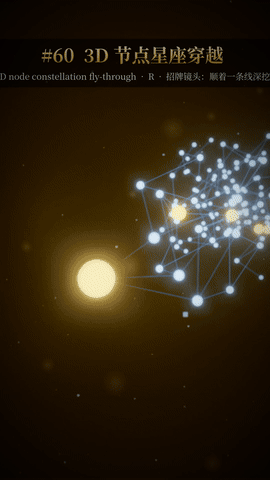
r_constellation3D3D node constellation fly-through / 3D 节点星座穿越树状节点 Tree · 招牌镜头：顺一条线深挖t_iris Iris reveal / 圆孔揭示 — 揭示答案 / revealt_coinWipe Object-shape wipe / 硬币擦除 — 钱相关话题切镜t_zoomThrough Zoom through a letter / 穿字推进 — 从标题进正文 / hook→bodyt_whip Whip pan / 甩镜 — 对比 A/B、转折t_pageTurn Page turn / 翻页 — 讲故事换年代 / chaptert_ink Ink bleed reveal / 墨迹晕开 — 情绪转折、开悟t_shatter Shatter cut / 玻璃碎裂 — 打破认知 / myth bustedt_blinds Venetian blinds / 百叶窗 — 列清单换项t_carry Object-carried cut / 物体带走 — 镜头间连续感t_glitch Glitch cut / 故障切 — 反转、打脸k_slam Slam text / 砸字 — 第1秒钩子 / hookk_scramble Scramble decode / 乱码解码 — 揭示秘密 / revealk_splitFlap Split-flap board / 机场翻牌 — 年份/地点/数字揭示k_stamp Rubber stamp / 盖章 — 下结论、定性k_highlight Highlighter sweep / 荧光笔划重点 — 金句关键词k_textPath Text on a path / 文字绕圈 — 循环、周期话题k_charDrop Physics letters / 字掉落弹跳 — 轻松吐槽k_type Typewriter / 打字机 — 引用一句原话（有出处）k_stretch Elastic stretch / 弹性拉伸字 — 强调"越来越"k_stack Word stack / 词语堆叠 — 列举三件事k_counterWords Karaoke word light / 逐词点亮 — 朗读金句跟读n_counter Counter roll-up / 数字飞涨 — 数字钩子 / number hookn_odometer Odometer / 里程表滚轮 — 年份/次数增长n_bars Bar grow / 柱子生长 — 比较几组数据n_coinStack Coin stack / 硬币越堆越高 — 积累、复利n_compound Compound curve ride / 复利曲线骑行 — "后面越来越快"n_timeline Timeline scrub / 时间轴拖动 — 人物生平节点n_pie Pie eats / 扇形吃掉 — 占比、被拿走多少n_dots 100-dot grid / 百人点阵 — "100个人里只有N个"n_scale Balance scale / 天平倾斜 — 取舍、两边对比c_orbit 3D orbit / 3D 环绕 — 开场大场面 / hookc_dollyZoom Dolly zoom / 推拉变焦（眩晕） — "突然意识到"的瞬间c_rackFocus Rack focus / 焦点转移 — 注意力从A转到Bc_spline Spline fly-through / 曲线穿越 — 招牌镜头一镜到底c_dutch Impact roll / 冲击侧滚 — 坏消息砸下来c_parallax Multi-layer parallax / 多层视差 — 交代环境m_spring Spring pop / 弹簧弹入 — 物件登场m_paperFold Paper fold / 纸张折叠 — 收起旧观念 / endingm_liquid Liquid fill / 液体注满 — 进度/储蓄满了m_particleText Particle form / 粒子聚字 — 关键词出现m_morph Shape morph / 形状变形 — A 变成 Bm_pendulum Newton cradle / 牛顿摆 — 因果传递m_domino Dominoes / 多米诺 — 小习惯→大结果m_explode Burst disperse / 爆裂散开 — 泡沫破裂g_depthPlate Depth-plate dolly / 场景板伪深度推镜 — 开场交代年代 / hookg_tex3D Textured 3D prop / 生图纹理 3D 道具 — 钱/文件/证据特写g_img2particles Image → particles → word / 图片碎成粒子聚字 — 高潮：物变词g_diorama Diorama + draw-on notes / 微缩模型+手绘批注 — 日常现象指出问题g_eraMorph Era scan morph / 跨时代扫描变形 — 技术/时代变迁g_puppet Cutout puppet / 剪纸木偶 — 人物故事动作拍g_skybox Generated skybox / 生图天空盒 — 结尾升华 / endingg_inkPaper Ink on generated paper / 生图纸墨 — 金句收尾g_spotlight Spotlight search / 探照灯寻物 — "答案藏在这里"g_tiles Tile assemble / 图块拼合 — 拼出全貌g_kenBurns Ken Burns plate / 生图推拉摇移 — 铺垫背景g_lens Magnifier inspect / 放大镜细看 — 看细节/小字g_polaroid Polaroid drop / 照片拍立得掉落 — 回忆、证据r_treeGrow Knowledge tree grows / 知识树生长 — 拆解一个概念、讲结构r_forceGraph Force graph lights up / 关系网逐个点亮 — 人物关系、因果网r_constellation3D 3D node constellation fly-through / 3D 节点星座穿越 — 招牌镜头：顺一条线深挖r_decision Decision tree path / 决策树选一条路 — 揭示正确选择（沉没成本）r_mindmap Radial mind map burst / 放射脑图炸开 — 列举可能性、开场铺开r_imageTree Tree with image leaves / 生图叶子树 — 人物一生章节、回顾结尾